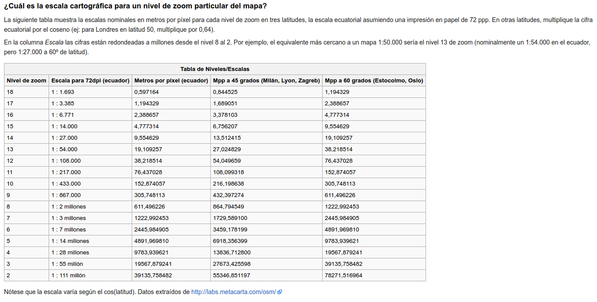

Cartografía colaborativa
Digital humanitarians
by @shiguera de Geoinquietos Madrid
Santiago Higuera

- Santiago Higuera @shiguera
- Profesor en Teleco Campus Sur
- Participo en:
- Publico en:
- eMail: santiago.higuera@upm.es
Programa del Curso
- Día 1
- Introducción: OSM y HOT
- Estructura de la información en OSM
- Edición con ID y JOSM
- Procedimientos para descarga de datos
- Día 2
- Práctica de mapeado con HOT-OSM
- Consultas selectivas con Overpass API
¿Qué es OpenStreetMap?
OpenStreetMap es una base de datos de información geográfica creada y mantenida de forma voluntaria y colaborativa por una creciente comunidad de entusiastas de los mapas.
Los datos contenidos en las bases de datos de OpenStreetMap son de acceso libre y gratuito.
¿Cómo se accede a OpenStreetMap?
A través del navegador web, en las direcciones:
Ver mapa más grande
Timelapse videos
Vídeo 10º aniversario (2014)
Time Lapse of Electricity Grid Edits
https://www.youtube.com/embed/_TgQbmWOPHAHOTOSM: Humanitariam OpenStreetMap Team
https://hotosm.org/
"Mapping support during the early phases of a response is critical, as responders and donors try to more clearly understand the situation on the ground"
(UN disaster coordination manager, Pakistan flood emergency 2010)
Each year, disasters around the world kill nearly 100,000 and affect or displace 200 million people.
Many of the places where these disasters occur are literally 'missing' from any map
First responders lack the information to make valuable decisions regarding relief efforts
Terremoto en Haiti, enero 2010
Magnitud: 7 Mw
Fecha: 12 de enero de 2010, 21:53 UTC
OSM Maps in Haiti before quake
OSM Maps in Haiti after quake
http://www.openstreetmap.org/#map=15/18.5637/-72.3118Map Compare
Terremoto en Nepal, abril 2015
Magnitud 7,81 u 8,12 MW
Fecha: sábado 25 de abril de 2015 - 6:11 GMT (11:57 hora local)
Map Compare
Terremoto en Ecuador, abril 2016
Magnitud: 7,8 Mw
Fecha: 16 de abril de 2016 18:58 ECT
Map Compare
How to work
Darse de alta como usuario registrado de OpenStreetMap
Para poder editar los mapas es necesario registrarse como usuario
Comunidad en español: telegram @OSMes
¿Quién ha hecho OpenStreetMap?
10 millones de usuarios registrados
8.500 millones de nodos
¿Quién hace OpenStreetMap ahora?
http://osmlab.github.io/show-me-the-way/¿Quién hace OpenStreetMap ahora en España?
http://osmstats.neis-one.org/?item=countries&country=Spain¿Cómo se financia OpenStreetMap
El mantenimiento de servidores y redes de comunicación en base a donaciones voluntarias de particulares y empresas

Componentes de OpenStreetMap

Componentes de la información geográfica
Componente espacial: La localización y la geometría de los elementos que aparecen en el mapa. Es la que hace que la información sea calificada como geográfica
Componente temática: La naturaleza y las características particulares de los elementos que aparecen en el mapa. Responde a la preguna ¿Qué es?
La componente espacial: nodes, ways
Los elementos básicos del mapa de OpenStreetMap son:
- Nodes: Un nodo es un punto
- Ways: Un way es una polilínea
Si el primer y último punto de una polilínea coinciden, la polilínea será cerrada
No existen líneas curvas, se hacen a base de polilíneas
Ejemplo de Node en formato OSM
<node id="25496583" lat="51.5173639" lon="-0.140043" version="1" changeset="203496"
user="80n" uid="1238" visible="true" timestamp="2007-01-28T11:40:26Z">
<tag k="highway" v="traffic_signals"/>
</node>
Ejemplo de Way en formato OSM
<way id="5090250" visible="true" timestamp="2009-01-19T19:07:25Z" version="8"
changeset="816806" user="Blumpsy" uid="64226">
<nd ref="822403"/>
<nd ref="21533912"/>
<nd ref="821601"/>
<nd ref="21533910"/>
<nd ref="135791608"/>
<nd ref="333725784"/>
<nd ref="333725781"/>
<nd ref="823771"/>
<tag k="highway" v="residential"/>
<tag k="name" v="Clipstone Street"/>
<tag k="oneway" v="yes"/>
</way>
La componente temática: tags (etiquetas)
Los elementos se describen mediante etiquetas, tags
Los tags son parejas de valores Key-Value.
Key y Value son cadenas de texto de formato libre
En la práctica hay convenciones acerca de qué etiquetas utilizar. Algunos ejemplos:
highway=residential
name=N-III
maxspeed=60
Escalas según nivel de zoom
Etiquetas frecuentes
http://wiki.openstreetmap.org/wiki/Map_Features
https://wiki.openstreetmap.org/wiki/ES:Objetos_del_mapa

Etiquetas frecuentes


Áreas, relations y polígonos
Áreas: Es una polilínea cerrada con la etiqueta area
Relations: Composiciones en base a elementos simples
Polygon: Relation reconocida por los renders. Permite dibujar áreas con agujeros, por ejemplo, edificios.
Ejemplo de Relation: Polygon
<relation id="1">
<tag k="type" v="multipolygon" />
<member type="way" id="1" role="outer" />
<member type="way" id="2" role="inner" />
</relation>

Controles del mapa OpenStreetMap
Capa visible
Controles del mapa OpenStreetMap
Compartir mapa

Controles del mapa OpenStreetMap
Exportar datos vectoriales

Controles del mapa OpenStreetMap
Editar

Material de aprendizaje: WIKI Spain
http://wiki.openstreetmap.org/wiki/ES:Wikiproyecto_EspañaMaterial de aprendizaje: Learn OSM
http://learnosm.org
HOTOSM: Material de aprendizaje - MapGive
http://mapgive.state.gov/learn-to-map/
Material de aprendizaje: libros
Búsqueda en Google

Mapear es fácil, ¿o no?
Puxi viaduct, Shanghai
Field Papers
http://fieldpapers.org/Para editar en JOSM:
- Descargar plugin FieldPapers en JOSM
- Habilitar control remoto en JOSM
Editor ID: Usar ortofotos PNOA
Para calcar en España, es mejor utilizar las ortofotos del PNOA. Hay que abrir el botón de capas y seleccionar la capa del PNOA
Editar OpenStreetMap con JOSM
https://josm.openstreetmap.de/JOSM proporciona herramientas de edición: descarga de datos, herramientas de dibujo, mapas de fondo para calcar, catálogos de etiquetas y subida de datos a los servidores de OSM

Plugins para JOSM
Hay muchos complementos para JOSM. Se puede encontrar información de los mismos en:
https://josm.openstreetmap.de/wiki/Plugins
JOSM: Atajos de teclado
Chuleta atajos de teclado para JOSMDescargas de datos: Planet OSM
https://planet.openstreetmap.org/38 Gb (Nov 17, 2014)
Descargas de datos: Geofabrik
Permite la descarga por continentes y paises
http://download.geofabrik.de/
Geofabrik tools: Map
http://tools.geofabrik.de/map/Geofabrik tools: Map Compare
http://tools.geofabrik.de/mc/Geofabrik tools: OSM Inspector
http://tools.geofabrik.de/osmi/Nominatim
Nominatim (del Latín, 'por nombre') es una herramienta para buscar datos de OSM por nombre y dirección y generar direcciones sintéticas (geocoding inverso)
http://nominatim.openstreetmap.org/THE END
BY Santiago Higuera

Esta obra está bajo una Licencia Creative Commons Atribución-NoComercial-CompartirIgual 3.0 Unported.